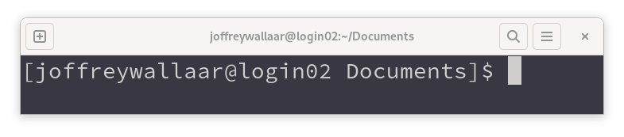

Linux command line basics
Joffrey Wallaart
April 2023
Course goals
Using the BASH command line, you can:- Work with files and make minor edits
- Transfer your files to other systems
- Create and run scripts
Course contents
- Linux
- Folders and files
- Editing files
- Redirecting output
- Installing local packages
- Permissions
- Remote Access
- Scripting
- Run your stuff on DelftBlue
Dennis Ritchie and Ken Thompson created UNIX in 1969

Digital vt100, 1978

Linux released in 1991
Good News!
You're already using Linux
What is running Linux?
Supercomputers
What is running Linux?
Apple and Micro$oft
What is running Linux?
New York Stock Exchange
What is running Linux?
Shinkansen bullet train
What is running Linux?
Smart TVs
What is running Linux?

Android smartphones
est. 3.3 bn users
What should be running Linux?
Your computer!
Housekeeping
Folder == Directory
CLI == Terminal == Console == Shell == Prompt
The command prompt
username @hostname location $ cursor
Your first command
$ pwd
"Present working directory"
This command shows your current location in the filesystem.
Basic navigation
The list command shows the contents of the current directory
$ ls
To move into a directory use Change Directory
$ cd Documents
Pro tip: Use the [tab] key for autocompletion.
Filesystem shortcuts
| ~ (or $HOME) | Your home directory |
| / | The root directory |
| . | The current directory |
| .. | One directory up |
Exercise:
- Try to navigate the filesystem using cd and ls.
- Don't forget [tab] for autocompletion.
- Try to find a file named the_chaos.txt.
- Try to figure out what 'cd -' does.
Options
The list command, but with an option to make it behave differently
$ ls -l
Options can sometimes be written in full. This is particularly useful for scripts
$ ls -l --human-readable
Arguments
You can also pass an argument to commands
This shows the contents of the 'Documents' folder:
$ ls Documents
You've been using arguments before:
$ cd Documents
Sometimes an option can also take an argument:
$ ls -l --time-style=long-iso
Where 'long-iso' is the argument for the option --time-style.
Getting Help
Almost all programs have a help option that will show you the proper syntax and most common options.
$ ls --help
for more in-depth information pull up the manual:
$ man ls
Exercise:
- Use the help option to construct the command to list all files in the home directory in reverse order, using the long list format.
$ ls -a -r -l /home/username/
$ ls --all --reverse -l $HOME
$ ls -arl ~
Hidden files, or dotfiles
Files and folders that start with a dot are hidden.
These contain settings or user specific (local) programs and libraries. Examples are .bashrc, .profile and the .config and .local subfolders. These will become very important when you want to customize your experience. For now, they are better left alone.
Git also uses a .git subfolder in your project root to do its magic. Did you know that git was created to keep track of development on the Linux kernel?
Exploring file contents
| cat | Simply print file contents to the terminal Good for scripts or short files |
| less | More options including search By default, man uses less to output text |
$ man ${filename}
$ less ${filename}
Exercise:
- Use less to open the_chaos.txt. Use search [/] to find 'croquet'
- try searching for 'and' and press [enter]
- use [n] and [n]. what does this do?
file operations
| cp ${source} ${target} | copy |
| mv ${source} ${target} | move or rename |
| mkdir ${directory} | make a directory |
| rm ${filename} | remove a file |
| rm -r ${directory} | remove a directory '-r' for recursive |
the last command will ask for confirmation for deletion of every file inside the directory. this can be remedied by using 'rm -rf'. be careful though: there is no trashbin to restore deleted files.
exercise
- play around with copying and deleting files in the ~/music folder
- rename all files with spaces in the filename
- create a classical_music subfolder and copy some files to it
- then delete the folder
- finally, get rid of the whole music folder with rm -rf!
editing files with

vi commands
from normal mode
| :w | write to disk |
| :q | quit |
| :wq | write and quit |
| [i] | insert mode |
| [u] | undo |
| [esc] | back to normal mode |
| [/] | search |
| :set number | display line numbers |
exercise
- run fixme.py in the ~/exercises/vim/ folder
- bugfix it using vim
$ cd $home/exercises/vim/
$ ./fixme.py # run the script from the local directory
$ vim fixme.py # run vim with the script name as argument
bug? enroll in wi4260tu to learn more!
redirecting output
| ${command} > ${filename} | redirect output to a new file |
| ${command} >> ${filename} | append output to a file |
| ${command} | ${command b} | use output as input for command b |
exercise:
- use /sbin/ldconfig to print a list of all available libraries on the system
- then, pipe that list to grep to see where the fftw library is installed (mind the case).
- use --help or man to find the correct options and syntax
$ /sbin/ldconfig --print-cache | grep --ignore-case "fftw"
or:
$ /sbin/ldconfig -p | grep -i fftw
if you cannot find a needed library this way it needs to be installed. if you have administrative access to the machine you can opt to install the package through the linux package manager.
some argue you are much better off keeping all your libraries separated from the operating system, in either a container or your homedirectory.
on shared environments like a supercomputer, you will more than likely not even have other options if the library or software is not available on the system.
installing packages in your home directory
for simplicity, we will use a language specific package manager many of you will be somewhat familiar with. python's pip will notice you are not a sysadmin and will default to installing to the .local folder in your $home.
install the ase package, we will need that in the next slide
$ pip install ase
exercise:
- try to find the newly installed libraries in ~/.local
permissions
file permissions allow you to control who has what kind of access to your files. to control them you have to set mode bits.
in a nutshell, there are three levels of ownership:
- user
- group
- other
- all
remember u,g,o and a. there are also three types of permissions:
- read
- write
- execute
remember r,w and x
set the mode bits
remember u,g,o (and a) and r,w,x. the command to change these is called change mode.
$ chmod
$ chmod u+x ${filename}
$ chmod go-wx ${filename}
$ chmod a+rwx ${filename} # probably not a good idea
Exercise:
- Go to ~/Exercises/permissions/
- Try to make gen_mol_folders.py executable and run it directly using ./gen_mol_folders.py
remote access with

try to log in to delftblue using your netid:
$ ssh -l ${netid} login.delftblue.tudelft.nl
there is a shorthand, but this is still a lot to type everytime you log in:
$ ssh ${netid}@login.delftblue.tudelft.nl
configure the client to make this a lot more user friendly.
use vim to create ~/.ssh/config:
$ mkdir ~/.ssh
$ vim ~/.ssh/config
then add:
host delftblue
user netid
hostname login.delftblue.tudelft.nl
now try:
$ ssh delftblue
this works for all programs that use ssh, not just command line
little trick to skip eduvpn when at home, shhh...
host bastion
user netid
hostname linux-bastion-ex.tudelft.nl
host delftblue
user netid
hostname login.delftblue.tudelft.nl
proxyjump bastion
Life gets better with ssh keys
# passphrase recommended, but skip for course
$ ssh-keygen -t ed25519
# install public key (or lock) on server
$ ssh-copy-id -i .ssh/id_ed25519.pub delftblue
# at home: $ ssh-copy-id -i .ssh/id_ed25519.pub bastion
Now:
$ ssh delftblue
These often also work for other applications
Transfer files with rsync
Rsync is the smartest file transfer program around.
Almost all cloud services use its algorithm to save bandwidth
For now, just copy the science folder to DelftBlue. The syntax is similar to copy, but can also target remote systems
$ rsync -avx ~/Documents/science delftblue:~/
Now run the same command again. Can you tell why rsync is so smart?
BASH scripting
Scripting is nothing more than slapping a few commands on top of each other in a file. BASH then executes the commands line by line.
Exercise:
- Go to ~/Exercises/scripting/
- Try to run example_script.sh a few times, then check it out in vim
- Can you figure out each part of the script
example-script.sh
#!/usr/bin/env bash
if [ $# != 2 ]
then
echo "Usage: example_script.sh Firstname Lastname"
exit
fi
firstname=$1
lastname=$2
echo "Hello ${firstname} ${lastname}!"
while true; do
read -p "Do you like this course? (y/n):" yn
case ${yn} in
[Yy*]* ) break;;
[Nn]* ) echo "wrong answer";;
* ) echo "Please answer y or n"
esac
done
echo "Thanks! That is awesome!"
echo "Do you know that your last name, ${lastname}"
echo "has ${#lastname} characters?"
mkdir --parent ${firstname}
echo $lastname >> ${firstname}/lastname.txt
echo "You've succesfullly ran this script"
sleep 1
echo "Let me count"
sleep 1
echo "$(cat $firstname/lastname.txt | wc -l) time(s)"
Now it is your turn to create a script
Edit the exercise script, so that it produces a new script that already has some boilerplate
Solution
#!/usr/bin/env bash
# Assigns the first argument to the variable script_name
script_name=$1
# Checks if script_name is set, if not prompt for name
if [ -z "${script_name}" ]
then
echo "Please enter a name for your script: "
read script_name
fi
# Kick the script off with a shebang
echo "#!/usr/bin/env bash" > ${script_name}
# Set the permissions
chmod u+x ${script_name}
# Run vim
vim ${script_name}